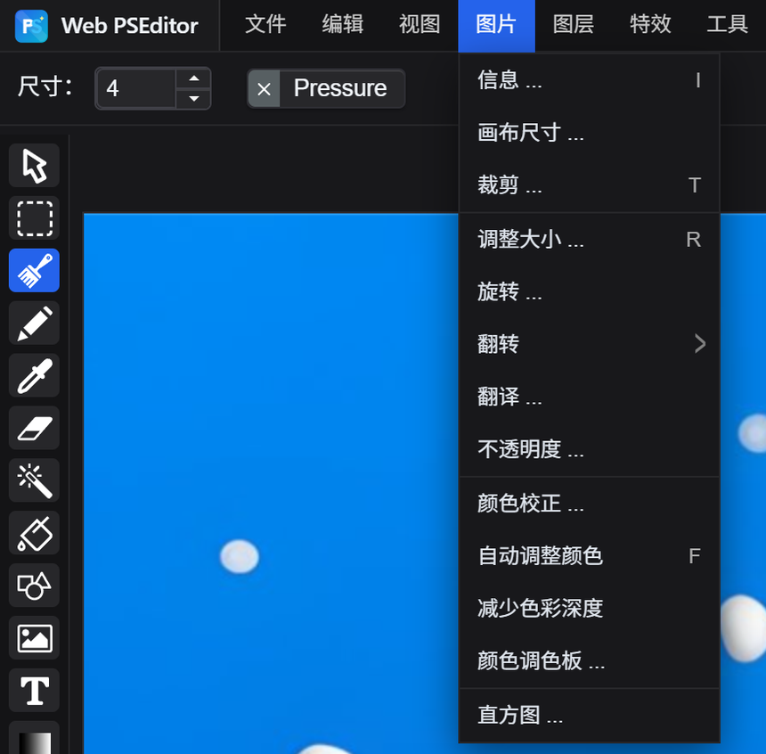

调整大小 / 画布尺寸 / 裁剪，别选错
【图片】 菜单里挨着放了三项，听起来都是「把图变成另一个尺寸」。它们干的是三件完全不同的事，选错那一项，就是丢清晰度或丢画面边缘的典型原因。
短版：调整大小 是重采样，像素数变了；画布尺寸 不动像素，只换底下那张纸；裁剪（Trim） 是把内容四周的纯色边删掉。下面说什么时候用哪个。

一句话区别
| 菜单项 | 改的是什么 | 像素数 | 什么时候用 |
|---|---|---|---|
| 图片 → 调整大小 | 宽高以及里面每一个像素 | 会变 | 必须正好 1200 像素宽，或有体积上限 |
| 图片 → 画布尺寸 | 图片底下那张纸 | 不变 | 要方图、要更宽的横幅、要留白边 |
| 图片 → 裁剪 | 删掉四周的纯色 | 变少 | 扫描件、截图带着一大圈白边 |
调整大小：目标按像素算的时候
【图片】→【调整大小】 是三项里唯一真正重建图像的。宽度和高度可以直接填像素，也可以用宽（%）、高（%）——两组只填一组。对话框里有三个设置必须知道：
Lanczos 最慢，缩图时保留的细节最多；Hermite 居中；Basic 是最近邻，快，但斜边会变成肉眼可见的台阶。照片缩图用 Lanczos；像素画要保持硬边，反而应该用 Basic。
勾上之后，缩放完会跟一道轻度的锐化。缩图一定会让画面稍微发软，这一步是用来把「看起来的清晰度」补回来的。但已经够锐的图形很容易过，判断要在 100% 缩放下看，别在适应窗口里看。
全部 会把所有图层和画布一起缩放，绝大多数情况都该选它。活动 只缩选中的那一层，用来单独把一张贴纸变小而不动背景。
要小心的是放大的方向。800 像素拉到 2400 像素，等于凭空生成从未拍到的像素，结果要么发虚，要么勾了锐化之后变得发脆。这里没有「智能超分」。要打大图，只能从更大的源文件开始。
画布尺寸：加空白，一个像素不丢
画布尺寸完全不碰图像数据，只改那张纸。图层的位置照旧从左上角算起，这个细节最容易踩：扩大画布，空间长在右边和下边，原本居中的主体会跑到左上角去。
先在 【图片】→【信息】 读到当前尺寸（假设 1200 × 1600）。打开 【画布尺寸】，按比例 不要勾，宽填 1600、高填 1600。这时照片落在 1600 × 1600 的纸上，右边是空的。接着填上底色，或用 【图片】→【翻译】 把图层居中：它填的是绝对坐标，X 位置填 (1600 − 1200) ÷ 2 = 200，Y 保持 0。
勾上，画布尺寸会连图层一起缩放——那其实是换了张脸的「调整大小」，图会变软。不勾，图层保持原像素，只有纸变大。要加白边，就该不勾。
除了「自定义」，对话框里还有一批预设尺寸，配一个纵向/横向的布局开关。平台要正好 1920 × 1080 或 1080 × 1080 的时候，选预设比手打数字再赌方向靠谱。
裁剪：删掉那一圈纯色边
裁剪是自动裁切。它从四条边往里看，把整行整列颜色一致的边删掉——典型场景是扫描件四周的白边，或截图外面的灰底。
- 裁剪图层 先裁当前图层四周，裁剪边框 再把画布收到剩下的内容边界。两个默认都勾，是先后执行，不是二选一。
- 功率（0–255）是容差。0 只裁纯白；调高之后接近白的像素也算，拍纸的照片白得不够纯，就得往上加。
- 裁剪白色吗？ 勾着只认白色边；取消掉就只按透明度裁，灰底、彩色底都不会被裁掉，那种边得用选区工具手工处理。
裁剪在点【确定】之后就定下来了，撤销还在，但导出的文件里不会再有那部分。扫描件要先裁再锐化，别把空白边也锐化一遍。
五秒决策
- 有上传限制、或「必须正好 1200 像素」→ 调整大小。
- 「要方图 / 要四周留白」→ 画布尺寸，再填充或平移。
- 「外面一大圈白边想去掉」→ 裁剪。
- 「缩小之后发虚」→ 回原文件，用 Lanczos + 勾锐化重做一次。
常见问题
改了画布尺寸，主体怎么跑到左上角了？
画布尺寸从不动图层。图层的坐标从左上角算起，所以多出来的空间长在右边和下边。用【图片】→【翻译】把它挪回去，或直接在画布上拖，然后把剩下的空白填上底色。
勾了锐化的缩放，真能把细节找回来吗？
不能。锐化提高的是边缘的局部对比，看着更清楚，但缩小丢掉的信息回不来。小幅缩图后在 100% 缩放下看效果不错；套在本来就很锐的图形上，会出白边、发脆。
裁剪和用选区工具裁是一回事吗？
不是。裁剪是自动的，只删颜色一致的边，容差由「功率」控制。选区工具是你在哪儿画就裁哪儿，边不是纯色的时候该用它。扫描件、截图用裁剪，其它情况用选区。
相关教程推荐
找一张照片，先看【图片】→【信息】，再用画布尺寸改成方画布、不要缩放，观察主体落在什么位置。